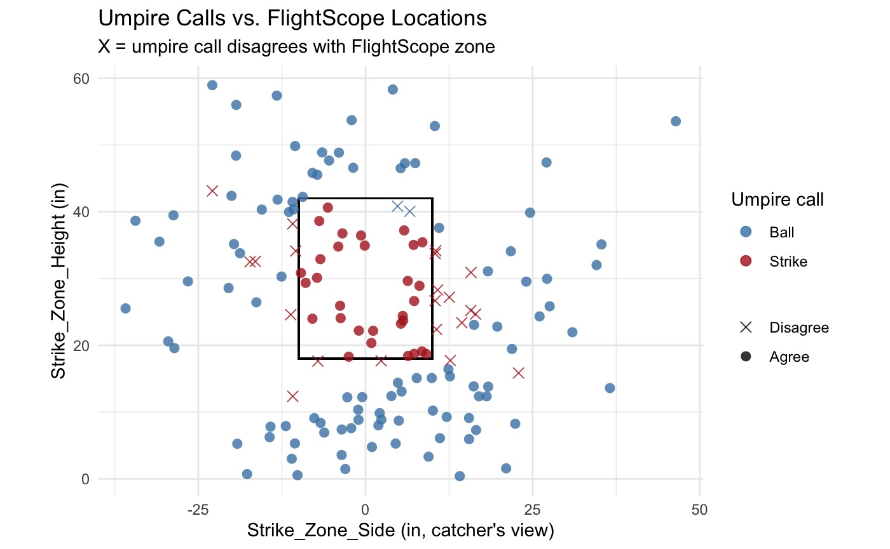
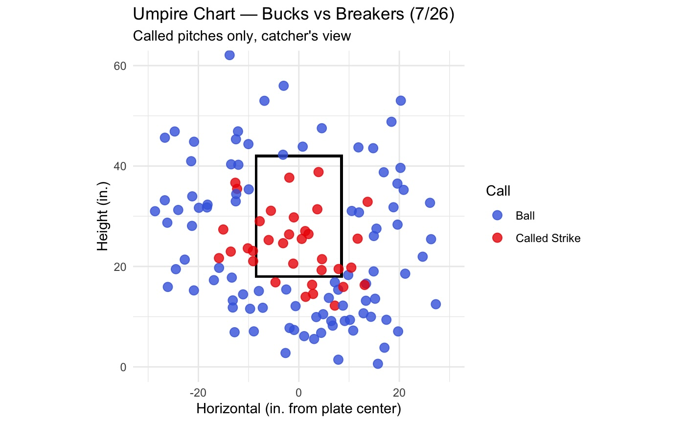
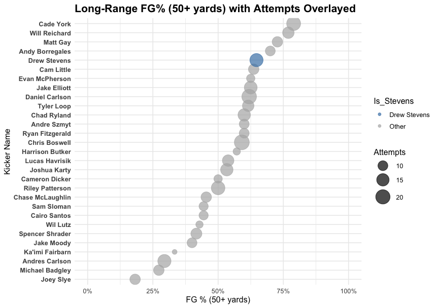
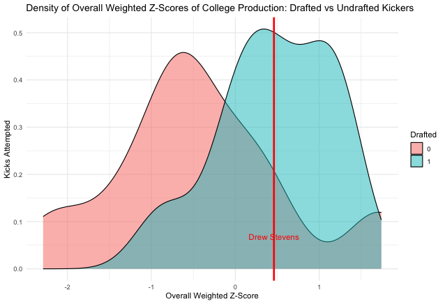
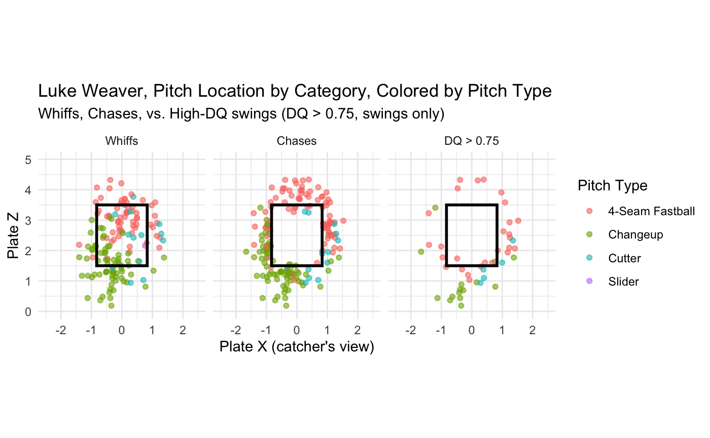

Flight Scope data tracking & analytics for the Hamptons Collegiate Baseball League.
Open app →A non-traditonal pitch sequencing model built to see if clubs value sequencing, and which pitchers utilize their most effective sequences most often. Built on 2025 Statcast data (729K+ pitches).
Open app →XG boost swing decision model to investigate which pitchers induce the worst swing decisions.
Read write-up →In-game tool for WBB staff to gauge whether or not a call is worth appealing. Modeled in game win probability, gauges WP swings, clock, home court, and timeouts left, including the new endgame advance-the-ball rule.
Open tool →Example of visuals built around shot-frequency and shooting-tendency for Temple Women's Basketball scouting process. Opponent identity anonymized as to not disclose unwanted information.
View visuals →
Comparing umpire ball/strike calls to FlightScope-tracked zone locations.

Called-pitch chart from the HCBL matchup on 7/26, catcher's view.

Benchmarking 50+ yard field goal percentage against the field.

Where a kicker's college-production z-score lands relative to drafted vs. undrafted outcomes.

Whiffs, chases, and high-Decision-Quality swings (DQ > 0.75), colored by pitch type — from the BDR swing decision model.